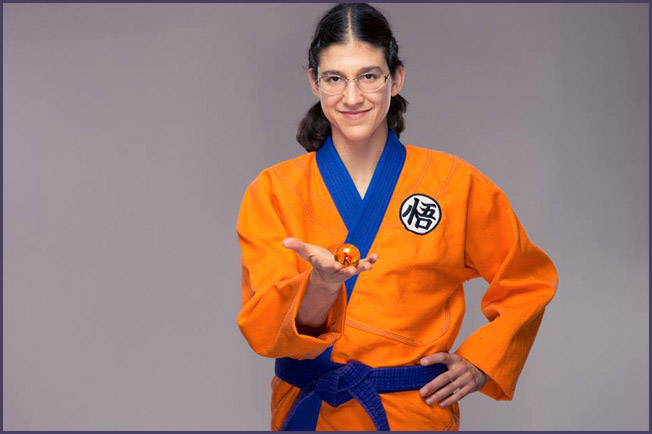
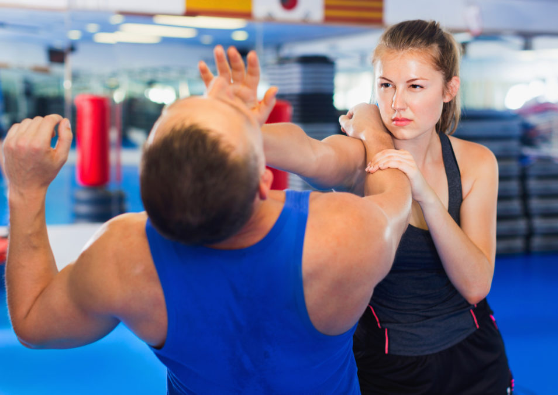

Utilizacion de la Espada
La espada es un arma blanca de dos filos que consiste básicamente en una hoja recta cortante, punzante —o con ambas características—, con empuñadura, y de cierta envergadura o marca (marca: aproximadamente a partir de medio metro).
Artes Marciales
Los términos arte marcial, artes marciales y artes militares aluden a aquellas prácticas y tradiciones cuyo objetivo es someter o defenderse mediante una técnica concreta.
Defensa personal
La defensa personal es un conjunto de habilidades técnico-tácticas encaminadas a impedir o repeler una agresión, realizadas por uno mismo y para sí mismo.